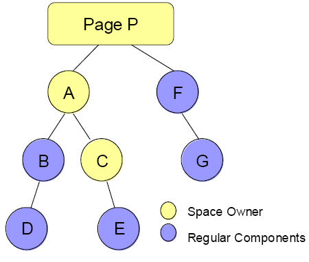

Sesión 3: El lenguaje zscript
El lenguaje zscript
Para hacer un prototipado rápido es posible embeber código Java en las páginas ZUML. Se trata de código Java declarado entre etiquetas <zscript> e interpretado por la librería BeanShell cuando el cargador de ZK carga la página.
En este código es posible definir variables, métodos, manejadores de eventos, datos e incluso clases que pueden ser utilizados en los componentes de la página. En el código también se pueden leer datos de los componentes de la página y de los objetos predefinidos del framework.
Hay dos formas de escribir código zscript. La primera es dentro de las etiquetas <zscript>:
<zscript>
Date now = new Date();
abc ="def";
</zscript>
${now}
${abc}
La segunda es dentro del manejador de eventos:
<button label="Haz click"
onClick='alert("Click en botón.")'/>
<label value="Mi etiqueta"
onClick='alert("Click en etiqueta.")'
onRightClick='alert("Botón derecho")'/>
Es conveniente utilizar zscript en ZUML. Tiene bastantes ventajas: no es compilado por lo que se puede modificar el contenido de la página dinámicamente, sin redesplegar la aplicación web. La sintaxis es muy intuitiva y sencilla de usar. Se complementa perfectamente con las expresiones EL y con la definición de componentes en la página.
Pero también tiene algunos inconvenietes. Por ejemplo, el rendimiento de la aplicación se ve penalizado al ejecutar zscript. Para aplicaciones con un gran número de usuarios es conveniente portar todo el código zscript a cóigo Java. Otro inconveniente es que no es posible depurar el código zscript, ni poner breakpoints en él.
En general, podemos decir que zscript es muy útil para el prototipado rápido de las páginas, pero es más complicado de depurar, mantener y reutilizar. El código que hacemos en una página zscript es complicado de reutilizar en otras páginas.
Vamos a repasar algo más despacio algunas de las características y usos de zscript.
BeanShell
ZK usa BeanShell como intérprete del código zscript. Por ello zscript soporta todas las características de BeanShell. Por ejemplo, como en otros lenguajes de scripting, es posible utilizar variables sin haberlas declarado previamente ni especificado su tipo. También se puede acceder a campos de los componentes y de los objetos implícitos, sin usar getters ni setters.
Algunos paquetes de Java los importa implícitamente BeanShell. Si necesitamos otros, los podemos importar explícitamente con la sintaxis habitual. Por ejemplo, podemos importar clases de la capa de persistencia de la aplicación:
<zscript>
import mysite.myproyect.PersonaDao;
import mysite.myproject.Persona;
void addItem() {
PersonaDao personaDao = new PersonaDao();
Persona persona = new Persona (item.nombre, item.apellidos, item.dni);
personaDao.add(persona);
}
</zscript>
Utilizando zscript para incializar
Hemos visto que en la fase de inicialización de la página, ZK procesa las instrucciones ?init. Es posible definir un código zscript que se ejecute en esta fase especificando un fichero que contenga el código zscript utilizando el atributo zscript.
Por ejemplo:
<?init zscript="/my/init.zs"?>
Hay que notar que la página todavía no está conectado al escritorio cuando se ejecuta la fase de inicalización de página.
Acceder a componentes utilizando su ID
Es muy sencillo acceder a los componentes utilizando zscript. Los nombres de las variables coinciden con los identificadores dados a los componentes. Por ejemplo, podemos acceder a la ventana 1 cuyo identificador es win_1 sólo utilizando el nombre de variable win_1:
<window id="win_1" title="Venana 1">
<zscript><![CDATA[
win_1.title="Titulo por zscript";]]>
</zscrip>
</window>
Veremos más adelante, cuando hablemos del espacio de identificadores (ID Space), que es muy importante tener en cuenta el ámbito de las variables a la hora de utilizarlas.
En el caso de código Java, podemos acceder por el nombre a los componentes utilizando el método getComponent de la clase org.zkoss.zk.ui.Path:
import org.zkoss.zk.ui.Path;
import org.zkoss.zul.Window;
...
Window win = (Window) Path.getComponent("/win_1");
win.setTitle("Título de Java");
...
Ámbito de las variables
BeanShell es un intérprete multi-scope que crea ámbitos jerárquicos. Si una variable no se encuentra definida en el ámbito actual, se busca en el ámbito del elemento padre. Desde el ámbito actual, los ámbitos de los componentes hijos no son accesibles. En ZK los ámbitos asociados a los componentes se denominan espacios de identificadores (ID spaces). Hablaremos más adelante de ellos.
Por ejemplo, en el siguiente ejemplo se crean dos ámbitos, uno para la ventana A y otro para la ventana B. Variables y componentes definidos en el ámbito de la ventana B (por ejemplo var2) no son accesibles desde el ámbito de la ventana A. Por el contrario, var1 es visible tanto para A como para B.
<window id="A">
<zscript>var1 = "abc";</zscript>
<window id="B">
<zscript>var2 = "def";</zscript>
</window>
</window>
En BeanShell es posible definir bloques de código y variables locales a ellos cerrándolos entre llaves ({}). Para que una variable sea local a un bloque hay que declararla dentro de él. Por ejemplo:
<window>
<zscript>
{
int var1 = 12;
var2 ="abc";
}
</zscript>
var1: ${var1}
var2: ${var2}
</window>
El resultado muestra la variable var2. La variable var1 se declara en el bloque de código y no es visible fuera de él.
Otros lenguajes de script
Además de Java, es posible utilizar otros lenguajes de script soportados por la máquina virtual Java. En la actualidad, los lenguajes soportados son:
- JavaScript, por medio del intérprete Rhino
- Ruby, por medio del intérprete JRuby
- Groovy, por medio del intérprete Groovy
En una página pueden coexistir scripts en diferentes lenguajes. Un ejemplo:
<button onClick="javascript:do_something_in_js()"/> <zscript language="groovy"> do_something_in_Groovy(); </zscript>
Cada lenguaje de scripting está asociado con un intérprete. Por ello, los variables y métodos definidos en un script no son visibles en el otro. Por ejemplo, var1 y var2 pertenecen a dos intérpretes distintos en el siguiente ejemplo:
<zscript language="Java">
var1 = 123;
</zscript>
<zscript language="JavaScript">
var2 = 234;
</zscript>
Si se omite el lenguaje de script, se asume que es Java. También es posible cambiar el lenguaje de script por defecto de la página, utilizando el atributo zscriptLanguage de la directiva page:
<?page zscriptLanguage="Groovy"?> <zscript> def name = "Hello World!"; </zscript>
Cada página instancia su propio intérprete para evaluar los scripts zscript. Si un desktop tiene múltiples páginas, entonces podría tener múltiples instancias de intérpretes en marcha.
Un ejemplo final
Terminamos con un ejemplo completo de código.
<window title="Ejemplo ZK" border="normal" width="200px">
¿Qué gestor de disposición es el que utilizas más?
<hbox>
<checkbox id="l1" label="Border" onCheck="doChecked()" />
<checkbox id="l2" label="Box" onCheck="doChecked()" />
<checkbox id="l3" label="Table" onCheck="doChecked()" />
<checkbox id="l4" label="Portal" onCheck="doChecked()" />
<checkbox id="l5" label="Column" onCheck="doChecked()" />
</hbox>
<hbox>
Has seleccionado :
<label id="layout" />
</hbox>
<zscript>
void doChecked() {
layout.value = (l1.isChecked() ? l1.label+' ' : "")
+ (l2.isChecked() ? l2.label+' ' : "")
+ (l3.isChecked() ? l3.label+' ' : "")
+ (l4.isChecked() ? l4.label+' ' : "")
+ (l5.isChecked() ? l5.label+' ' : "");
}
</zscript>
</window>
Expresiones EL
Igual que JSP, es posible utilizar expresiones EL en las páginas ZUML. A través de estas expresiones es posible leer valores y acceder a componentes JavaBeans. También se utilizan para acceder a componentes de ZK y a objetos implícitos. Sin embargo, a diferencia de JSP, no es posible utilizar el operador "=" para actualizar un valor de un JavaBean.
Las expresiones EL tienen la sintaxis ${expr}
Acceso a JavaBean
Por ejemplo:
<element attr1=${bean.property}>
La expresión ${bean.property} accede al método bean.getProperty y actualiza el atributo attr1. La variable bean se puede declarar en código zscript.
Un ejemplo completo:
<window>
<zscript>
Person person = new Person();
person.setFirstName("Tom");
person.setLastName("Hanks");
</zscript>
First name is :${person.firstName}
Last name is :${person.lastName}
Full name is :${person.fullName}
</window>
Y la clase Java Person.java:
public class Person {
private String firstName = "";
private String lastName = "";
// getter and setters
public void setFirstName(String firstName) {
this.firstName = firstName;
}
public String getFirstName() {
return firstName;
}
public void setLastName(String lastName) {
this.lastName = lastName;
}
public String getLastName() {
return lastName;
}
public String getFullName() {
return firstName + " " + lastName;
}
}
Acceder a un componente ZUML
Podemos utilizar los identificadores de los componentes en las expresiones EL y acceder a sus atributos. Un ejemplo:
<window>
<textbox id="source" value="ABC"/>
<label value="${source.value}"/>
</window>
Objetos implíctos
Podemos acceder también a objetos implícitos y obtener sus propiedades:
<window>
<label value="${session.deviceType}"/>
</window>
El navegador debe mostrar el resultado: ajax.
Ejemplos adicionales
Otros ejemplos de expresiones EL:
${empty myMap}
${myMap[entry]}
${3+counter}
empty es un operador que comprueba si una colección, un mapa, un array o string es vacío.
La expresión myMap[entry] es una forma de acceder a un elemento del map.
Las expresiones EL devuelve objetos Java de cualquier tipo (dependiendo del método get del bean). Hay que tener cuidado de que sean compatibles con los atributos a los que se asignan. Por ejemplo, la siguiente expresión devuelve un objeto booleano:
<window if="${some > 10}">
También se soportan objetos implícitos estándar como param y requestScope y objetos ZK implícitos como self y page:
<textbox value="${param.who} does ${param.what}"/>
zscript y EL
Hay que diferenciar entre el código EL y el código zscript. Ambos tienen diferente sintaxis y diferentes ciclos de vida y pueden ser usados en diferentes momentos. Por ejemplo, el códdigo EL permite llamar a funciones, acceder a campos de componentes y recuperar sus valores. El código EL permite también intercalarse con código de componentes para asignar propiedades de atributos o con las etiquetas de ZK if,unless o foreach. El código zscript, por otra parte, es más similar al código Java. Permite definir clases, métodos y variables que pueden ser utilzadas en las expresiones EL.
Por ejemplo, el siguiente código define una variable usada después en una expresión EL:
<zscript><![CDATA[
Date now = new Date();
var="abc";
]]>
</zscript>
<window title="Ejemplo abc" border="normal">
Fecha: ${now}; Variable: ${var}
</window>
Podemos cambiar el tipo y el valor de la variable y probar a ver cómo se muestra en la página.
En el siguiente ejemplo, podemos ver cómo se define una función en el código zscript y después se utiliza en el manejador de eventos. Es interesante notar que la posibilidad de definir funciones independientes de clases es algo que no está permitido en Java, pero sí en BeanShell y zscript.
<window>
<zscript>
public void diHola(Button boton){
alert(boton.getLabel());
}
</zscript>
<button label="¡Di hola!" onClick="diHola(self)" />
</window>
En zscript es posible acceder los objetos implícitos definidos por ZK. En el ejemplo se accede al objeto self.
Atributos ZK
Los atributos ZK son atributos de los elementos de ZUML que son usados por el motor de ZK para gestionar la carga de la página, de los elementos o para relacionar código y clases Java con la página.
Empezamos con un ejemplo en el que se utilizan los atributos if, unless y forEach. Son atributos que permiten modificar la creación de los componentes. Toman valor de expresiones EL y variables definidas en zscript.
<window border="normal">
<zscript>
newBtn = true;
dias = new String[] {"Lunes", "Martes","Miércoles"};
</zscript>
<button label="Nuevo" if="${newBtn}">
<attribute name="onClick">
alert("I am a new Button!");
</attribute>
</button>
<button label="Viejo" unless="${newBtn}"/>
<separator />
<listbox width="100px">
<listitem label="${each}" forEach="${dias}" />
</listbox>
</window>
Vamos a utilizar este ejemplo e ir explicando más cosas utilizándolo como base.
if y unless
El atributo if permite definir una construcción condicional de un elemento.
<elemento if="${expr-EL}>
...
</elemento>
El elemento se construye si y sólo si el resultado de evaluar la expresión EL asociada es true. Por ejemplo:
<window if="${a==1}">
...
</window>
El atributo unless funciona al contrario; sólo se compone el elemento si la expresión asociada es false.
forEach
La evaluación de un elemento puede ser iterativa. La forma de hacerlo es especificando una colección de objetos sobre la que se itera con el atributo forEach. La colección de objetos debe ser el resultado de una expresión EL, en la que podemos utilizar alguna variable inicializada con zscript.
La variable each recorre la colección y va tomando los valores de sus elementos.
Algunos ejemplos:
<listbox>
<listitem label="${each}" forEach="Good, Better, Best"/>
</listbox>
<window>
<zscript>
grades = new String[] {"Good", "Better", "Best"};
</zscript>
<listbox>
<listitem label="${each}" forEach="${grades}" />
</listbox>
</window>
Espacio de identificadores
La interfaz de usuario es la encargada de interactuar con el usuario. Un conjunto de eventos internos son procesados por ella de forma autónma. Pero tarde o temprano la IU deberá lanzar un evento para pedir a la aplicación que realice algún procesamiento. Por ejemplo cuando se pulsa un botón. O cuando se elige una opción de un menú.
La aplicación debe poder obtener a partir de la IU y del evento que se ha producido información sobre el estado de la IU: los datos introducidos por el usuario, las opciones seleccionadas, el tamaño de los paneles, etc. En resumen, debe poder recuperar datos de los componentes. Y, una vez realizado el procesamiento, debe poder actualizar sus atributos y su estado. Para ello es necesario que la aplicación pueda acceder a los componentes.
Una de las facilidades de ZK es que permite acceder a los componentes por identificadores definidos por el programador. El comportamiento termina siendo muy similar a la forma de acceder a variables en un lenguaje de programación. De hecho, los componentes pueden ser manejados como variables desde el código zscript.
Esta idea de los componentes como variables abre la cuestión del ámbito. ¿En qué ámbito están definidos los componentes? Cuando asignamos un identificador a un componente, ¿en qué partes de la página ZUML podemos usar ese identificador?
Para contestar a estas preguntas ZK introduce el concepto de espacio de identficadores (ID Space). Un espacio de identificadores (espacio ID) es un subconjunto de componentes de un escritorio. Sólo dentro de esos componentes se pueden acceder a los identificadores asociados a los componentes. Dentro de un mismo espacio ID los identificadores no pueden estar repetidos.
Los espacios ID están asociados a ciertos componentes. Los dos principales son la propia página y el componente ventana (org.zkoss.zul.Window). Todos los componentes que se definen dentro de una ventana (sus hijos en el árbol de componentes) forman un espacio ID que se asocia a la propia ventana.
A su vez, una ventana está incluida en la página, que también contiene un espacio ID. El componente que está más arriba de un espacio de identificadores se denomina el propietario del espacio. Puede obtenerse con el método getSpaceOwner de cualquier componente del espacio. Ese componente es el que guarda los identificadores de todos los componentes hijos y se asegura de que no estén repetidos.
En el caso en que un espacio ID, digamos X, es descendiente de otro espacio ID, digamos Y, entonces el propietario del espacio X forma parte del espacio Y, pero no sus descencientes. Los descendientes son parte del espacio X.
Un ejemplo:
<?page id="P"?>
<zk>
<window id="A">
<hbox id="B">
<button id="D" />
</hbox>
<window id="C">
<button id="E" />
</window>
</window>
<hbox id="F">
<button id="G" />
</hbox>
</zk>

El ejemplo muestra tres espacios de identificadores: P, A, y C. El espacio P incluye a los componentes P, A, F y G. El espacio A incluye A, B, C y D. El espacio C incluye C y E.
Los componentes en un mismo espacio se denominan fellows. Por ejemplo, A, B, C y D son fellows del mismo espacio de identificadores.
El espacio ID se define en Java como la interfaz org.zkoss.zk.ui.IdSpace. El método principal que define esta interfaz es getFellow, que permite obtener un componente a partir de su identificador. Este método también está definido en la interfaz Component, por lo que podemos llamarlo en cualquier componente de un espacio de identificadores no sólo en el propietario del espacio.
Veremos más adelante ejemplos de uso del método getFellow.
Otra forma de acceder a un componente es utilizando el método estático org.zkoss.zk.ui.Path.getComponent(String path). Por ejemplo, podemos obtener el componente E del ejemplo anterior de cualquiera de las dos siguientes formas:
Path.getComponent("/A/C/E");
Path.getComponent("//P/A/C/E");
Una vez que obtenemos el componente podemos llamar a métodos Java para modificar sus características.
Ejemplo de un fichero path.zul
<window id="w" apply="MyComposer"> <button id="b" label="ok" forward="onClick=onChangeLabel"/> </window>
Y el fichero MyComposer.java:
import org.zkoss.zk.ui.Path;
import org.zkoss.zk.ui.util.GenericComposer;
import org.zkoss.zul.Button;
public class MyComposer extends GenericComposer {
Button btn = new Button();
public void onChangeLabel(){
btn = (Button)Path.getComponent("/w/b");
btn.setLabel("Changed");
}
}
Espacios de nombres y espacios ID
El intérprete de zscript puede acceder a los componentes directamente, utilizando su identificador como nombre de variable. Para ello se utiliza el concepto de espacio de nombres. El espacio de nombres es el conjunto de variables definidas y usables en un determinado ámbito de la página.
Existe un espacio de nombres por cada espacio ID. Las variables definidas en un espacio de nombres son visibles en los scripts de zscript y en las expresiones EL que pertenecen al mismo espacio de nombres.
en el siguiente ejemplo hay dos espacios de nombres. Uno pertenece a la ventana w1 y el otro pertenece a w2. Por ello, el botón b1 del script onClick se refiere a la etiqueta definida en la ventana w2, mientras que el botón b2 se refiere al checkbox definido en la ventana w1
<window id="w1">
<window id="w2">
<label id="c"/>
<button id="b1" onClick='c.value = "OK"' label="click me"/>
</window>
<checkbox id="c"/>
<button id="b2" onClick='c.label = "OK"' label="click me"/>
</window>
El espacio de nombres es jerárquico. Por ejemplo, en el código zscript en la ventana w2 podemos referenciar a componentes de la ventana w1 (a no ser que hayan sido sobreescritos):
<window id="w1"> <window id="w2"> <button id="b1" onClick='c.value = "OK"' label="Click me"/> </window> <label id="c"/> </window>
Parece extraño a primera vista que en el ejemplo podamos referirnos en el evento onClick a la etiqueta c que todavía no ha sido creada. ¿No deberíamos de crear una variable antes de usarla? La respuesta tiene que ver con el ciclo de vida de la página. El código zscript del evento se evalúa realmente cuando el usuario hace click en el botón. En ese momento la etiqueta con el identificador c ha sido creada y es visible a zscript.
Un último ejemplo:
<window id="w1">
<label id="w1_L1" value="origin_w1_L1" />
<button id="w1_b1" label="origin_w1_b1"
onClick='w2_L1.value="after_w1_b1"' />
<zscript>
w1_z1="origin_w1_z1";
</zscript>
w1_1:${w1_z1}
<window id="w2">
<label id="w2_L1" value="origin_w2_L1" />
<button id="w2_b1" label="origin_w2_b1"
onClick='w1_L1.value="after_w2_b1"' />
w2_1:${w2_z1}
<zscript>
w2_z1="origin_w2_z1";
</zscript>
w2_2:${w2_z1} w2_3:${w1_z1}
</window>
w1_2:${w2_z1}
</window>
Procesamiento de una página ZUL
Hemos visto que una página ZUL contiene un conjunto de componentes y código zscript. Desde el código zscript y desde los propios componentes se puede acceder a otros componentes, para leer o modificar sus atributos.La forma de acceder a un componente desde otro o desde código zscript es utilizando su identificador.
En muchos aspectos estas características son similares a las de un código de un programa en un lenguaje de programación determinado. En el programa se definen variables a las que se inicializa con ciertos valores. En el código se utiliza estas variables y se puede leer y modificar sus valores.
De la misma forma en que el programador debe saber cómo se definen las variables, qué ámbito (scope) tienen o desde qué partes del código se puede acceder a ellas, el programador de ZK debe cónocer cómo asociar identificadores con componentes y en qué ámbitos se pueden utilizar estos identificadores. También es muy importante conocer cómo se procesa la página ZUML.
Vamos a empezar con un par de ejemplos muy sencillos que dan pistas sobre el procesamiento de la página.
En el primer ejemplo declaramos dos etiquetas (label). En la primera de ellas definimos el identificador label1 que utilizamos en la segunda para leer su valor y ponerlo como valor de esta segunda etiqueta.
<window title="ejemplo" border="normal">
<label id="label1" value="Hola label 1"/>
<label value="${label1.value}"/>
</window>
En pantalla aparecerá "Hola label 1 Hola label 1".
Ahora cambiamos el orden de las etiquetas. ¿Qué aparece por pantalla?
<window title="ejemplo" border="normal">
<label value="${label1.value}"/>
<label id="label1" value="Hola label 1"/>
</window>
Si ejecutamos el ejemplo, vemos que aparecerá únicamente "Hola label". Cuando ZK procesa la página y construye la primera etiqueta, busca el valor de label1.value que todavía no se ha declarado. Al no encontrarlo, deja vacía el valor de la primera etiqueta.
Veamos un segundo ejemplo, ahora con zscript. ¿Cuál será el resultado?
<window title="ejemplo" border="normal">
<label id="label1" value="Hola label"/>
<zscript>
label1.value = "Hola zscript";
</zscript>
${label1.value}
</window>
Podemos comprobar que el resultado es "Hola zscript Hola zscript". La ejecución del código zscript cambia el valor de la etiqueta antes de que se muestre por pantalla. ¿Qué pasa si cambiamos el orden de la instrucción ${label1.vale}?
<window title="ejemplo" border="normal">
<label id="label1" value="Hola label"/>
${label1.value}
<zscript>
label1.value = "Hola zscript";
</zscript>
</window>
Vemos que el resultado es "Hola label Hola zscript".
Evidentemente, es importante el orden en el que se construyen los componentes, se ejecuta el código zscript y se transforman los componentes en código HTML. Vamos a explicar estos conceptos en este apartado.
Cuando el cargador de ZK (ZK loader) recibe una petición de una página ZUL, debe procesar su descripción ZUML y generar HTML+JavaScript que manda al navegador. Lo hace siguiendo los siguientes pasos:
- Fase de inicialización de la página
- Fase de creación de componentes
- Fase de procesado de eventos
- Fase de renderizado
Fase de inicialización de la página
En esta fase se procesa la instrucción ZK ?init en la que se puede llamar a un código zscript o al método doInit de una clase Java especificada.
Para llamar a un código zscript:
El fichero init.zs en el directorio my contiene código zscript que se ejecuta al inicializar la página. El fichero debe contener un programa zscript sin las etiquetas <zscript>.
Por ejemplo, podemos inicializar un array de cadenas en el fichero /my/init.zs:
diasSemana = new String[] {
"Lunes", "Martes", "Miércoles",
"Jueves", "Viernes", "Sábado", "Domingo"};
Y mostrarlas en una lista con el siguiente código (veremos más adelante el atributo ZK forEach:
<?page title="Días de la semana" contentType="text/html;charset=UTF-8"?>
<?init zscript="/my/init.zs"?>
<window title="Días de la semana" border="normal">
<listbox width="200px">
<listitem label="${each}" forEach="${diasSemana}" />
</listbox>
</window>
También es posible también llamar a código Java en esta fase de inicialización, utilizando el atributo class. La clase debe implementar la intefaz org.zkoss.zk.ui.util.Initator. En el momento de inicialización de la página se construye una instancia de la clase y se llama a su método doInit. El método doFinally se llama después de que la página se haya evaluado. Y el método doCatch se llama si se produce alguna excepción durante la evaluación de la página.
También es posible pasar cadenas (String) como parámetros a la clase de inicialización. Se guardan en un mapa que se recoge como parámetro en el método doInit.
Ampliamos el ejemplo anterior, en el que la clase de inicialización ayto.zk.MyInit crea una lista de cadenas y las guarda en un singleton. El código zscript las recoge llamando al método getMyStrings() y se muestran en la página de la misma forma que en el ejemplo anterior.
<?page title="Matriculados" contentType="text/html;charset=UTF-8"?>
<?init class="ayto.zk.MyInit" numMatriculados="30"?>
<zk>
<zscript>
import ayto.zk.MyModelSingleton;
MyModelSingleton model = MyModelSingleton.getInstance();
List matriculados = model.getMyStrings();
</zscript>
<window title="Matriculados" border="normal">
<listbox width="200px">
<listitem label="${each}" forEach="${matriculados}" />
</listbox>
</window>
</zk>
package ayto.zk;
import java.util.ArrayList;
import java.util.List;
import java.util.Map;
import org.zkoss.zk.ui.Page;
public class MyInit implements org.zkoss.zk.ui.util.Initiator {
@Override
public void doAfterCompose(Page arg0) throws Exception {
}
@Override
public boolean doCatch(Throwable arg0) throws Exception {
return false;
}
@Override
public void doFinally() throws Exception {
}
@Override
public void doInit(Page arg0, Map arg1) throws Exception {
MyModelSingleton model = MyModelSingleton.getInstance();
String num = (String) arg1.get("numMatriculados");
int i = Integer.parseInt(num);
List<String> nombres = new ArrayList<String>();
for (int j = 1; j < i; j++)
nombres.add("Alumno " + j);
model.setMyStrings(nombres);
}
}
Fase de creación de componentes
En esta fase el cargador de ZK interpreta una página ZUML. Crea e inicializa los componentes. Lo hace siguiendo los siguientes pasos:
- Para cada elemento, examina el atributo if y unless para decidir si hay que crearlo. Si no, el elemento y sus hijos son ignorados.
- Si se especifica el atributo forEach con una colección de items, ZK repite los siguientes pasos para cada item en la colección.
- Crea un componente basado en el nombre del elemento o usando la clase especificada en el atributo use, si existe.
- Inicializa los miembros uno a uno en el orden en el que se especifican los atributos en la página ZUML.
- Interpreta los elementos anidados y repite el procedimiento completo.
- Invoca el metodo afterCompose si el componente implementa la interfaz org.zkoss.zk.ui.ext.AfterCompose.
- Después de que se han creado todos los hijos, se envía el evento onCreate al componente, de forma que la aplicación puede realizar tareas de inicialización de los elementos. Hay que notar que los eventos onCreate se han enviado a los componentes hijos.
Fase de renderizado
En esta fase ZK convierte el árbol de componentes en una página HTML invocando el método redraw de cada componente.
Un componente podría tener apariencias diferentes incluso en la misma página. ZK utiliza el concepto de mold (molde o plantilla). Se puede modificar el aspecto de un componente utilizando el método setMold de la interfaz componente o el atributo mold del elemento. Si no se especifica ningún mold, el elemento utiliza el mold denominado default.
Por ejemplo, el elemento tabbox que define una caja de pestañas soporta también el mold accordion:
<tabbox>
<tabs>
<tab label="Default"/>
</tabs>
<tabpanels>
<tabpanel>
<tabbox mold="accordion">
<tabs>
<tab label="First Accordion"/>
<tab label="Second Accordion"/>
</tabs>
<tabpanels>
<tabpanel>The first panel.</tabpanel>
<tabpanel>The second panel.</tabpanel>
</tabpanels>
</tabbox>
</tabpanel>
</tabpanels>
</tabbox>